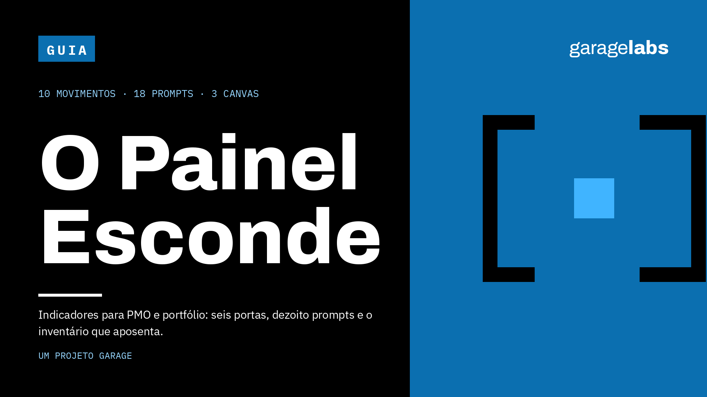

Para PMO que herdou painel sem dono
Para quem herdou painel cheio e sem dono e não pode desligar tudo de uma vez sem briga política
Entrega imediata em PDF após a confirmação do pagamento. Garantia de 7 dias.
01 · O problema
Em congresso de gestão alguém sempre diz que setenta e cinco por cento dos PMOs morrem no primeiro ano por não comprovarem valor. O número circula há anos, em apresentação e em post.
Ele não tem fonte. E enquanto o folclore ocupa a conversa, o painel real cresce sozinho: cada sugestão razoável vira mais uma linha, até que ninguém lê e todo mundo arquiva.
02 · O inventário
São 110 páginas em A5, com dez movimentos, dezoito blocos de prompt numerados e três canvas em A4 para imprimir. Traz o método das seis portas, que reprova indicador sem decisão declarada, sem cálculo escrito, sem fonte, sem dono, sem validade e sem contrapeso.
03 · O método
O método reprova indicador que não passa por todas. Um indicador que falha em qualquer porta não entra no painel.
04 · O resultado
Ao final, cada indicador do seu painel tem uma decisão que ele muda, um cálculo escrito, uma fonte com dono e um contrapeso que detecta manipulação.
05 · O limite
Não é para quem quer biblioteca de indicadores por setor. O guia entrega o critério de admissão, não o catálogo.
06 · A entrega
Dez movimentos. Treze prompts. Três canvas
Entrega imediata em PDF · Garantia de 7 dias · Pagamento processado pela Hotmart